01068007 CONTROL SYSTEMS · CHAPTER 11
Compensator Design using Bode Diagram — Lead · Lag · Lead-Lag · PID
รศ. ดร. อาจินต์ น่วมสำราญ
ภาควิชาวิศวกรรมการวัดและควบคุม คณะวิศวกรรมศาสตร์ สจล.
ภาพรวม
แบ่งแกนความถี่ของ open loop L(jω) = Gc(jω)·G(jω) เป็น 3 ช่วง แต่ละช่วงคุมสเปกคนละตัว
| ช่วงความถี่ | สิ่งที่กำหนด | ตัวช่วยที่ใช้ |
|---|---|---|
| ต่ำ (ω → 0) | ความผิดพลาดสถานะคงตัว Kv, Ka | เกน Kc, Lag หรือเทอม I ของ PID |
| กลาง (รอบ ωgc) | เสถียรภาพสัมพัทธ์ PM, GM และ %OS | Lead หรือเทอม D เติมเฟส, Lag ย้าย ωgc ลง |
| สูง | การกรองสัญญาณรบกวน | Lag ลดเกนความถี่สูง |
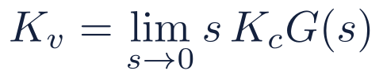
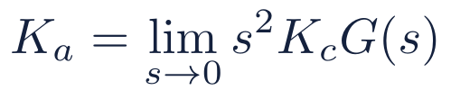
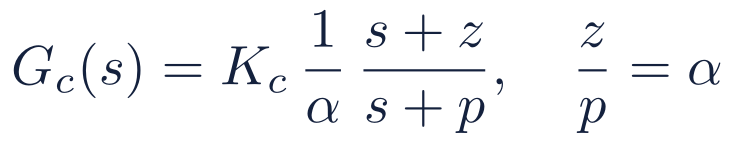
01068007 Control Systems · Chapter 11
2
ขั้นตอนร่วมทุกตัวอย่าง
1
จากสเปก Kv หรือ Ka
2
ของ Kc·G(s) อ่าน PM, GM และ ωgc
3
Lead, Lag, Lead-Lag หรือ PID ตามช่องว่างของ PM
4
Bode ใหม่, step และ ramp response
ทุกข้อเผื่อเฟสไว้ 5–6° เพราะ ωgc จะเลื่อนหลังใส่ตัวชดเชย ถ้ายังไม่ถึงสเปกให้เพิ่มค่าเผื่อแล้วทำซ้ำ
01068007 Control Systems · Chapter 11
3
LEAD COMPENSATOR
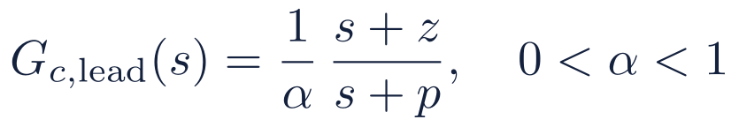
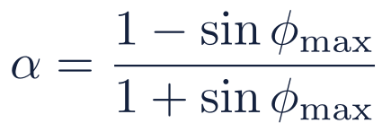
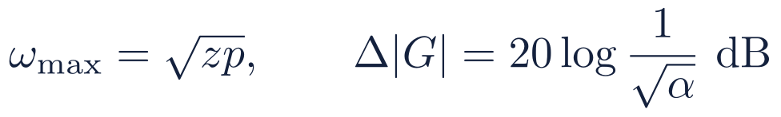
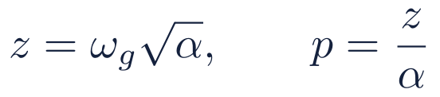
φmax เกิน 55–60° ทำให้ α เล็กมาก เกนความถี่สูงพุ่ง ใช้ Lead สองตัวหรือ Lead-Lag แทน
01068007 Control Systems · Chapter 11
4
ตัวอย่างที่ 1 · LEAD
สเปก: Kv = 20 s⁻¹ , PM ≥ 50° , GM ≥ 10 dB
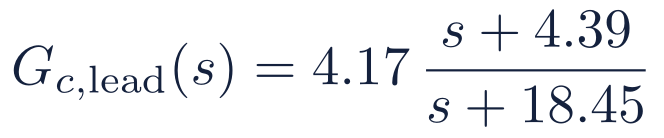
ผล: PM = 50.7° @ 8.87 rad/s , GM = ∞ , ramp e_ss = 1/Kv = 0.05
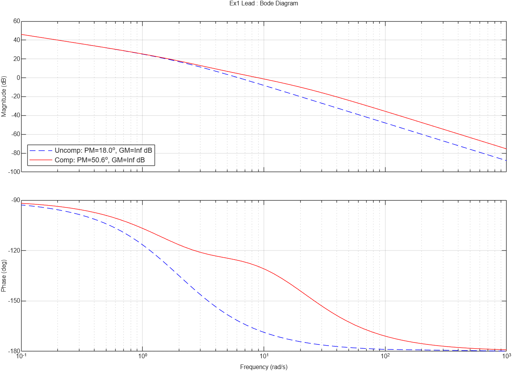
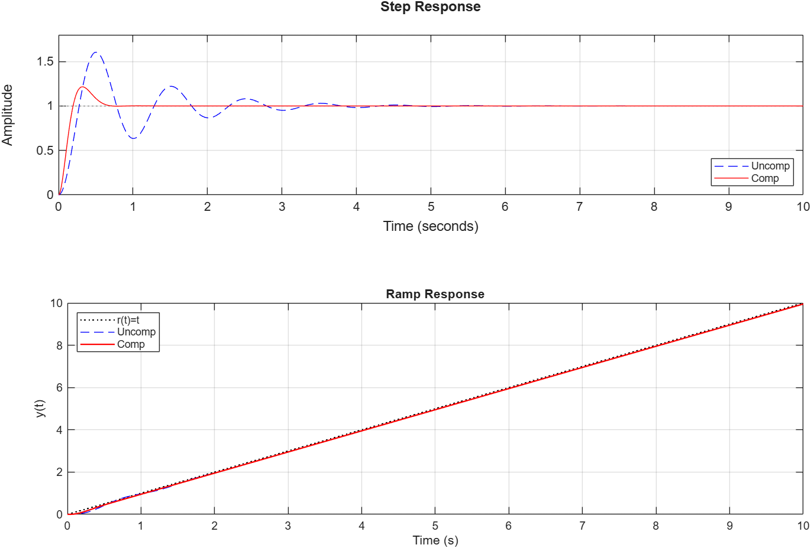
01068007 Control Systems · Chapter 11 · L11_Ex1_Lead.m
5
ตัวอย่างที่ 2 · LEAD กับ PLANT TYPE-2
สเปก: Ka = 10 s⁻² , PM ≥ 50° , GM ≥ 10 dB
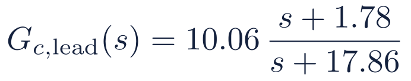
ผล: PM = 55° @ 5.63 rad/s , ramp e_ss = 0 , parabolic e_ss = 1/Ka = 0.1
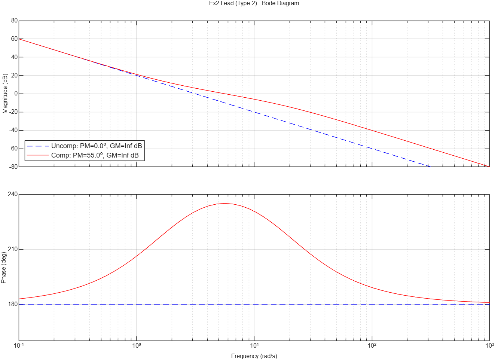
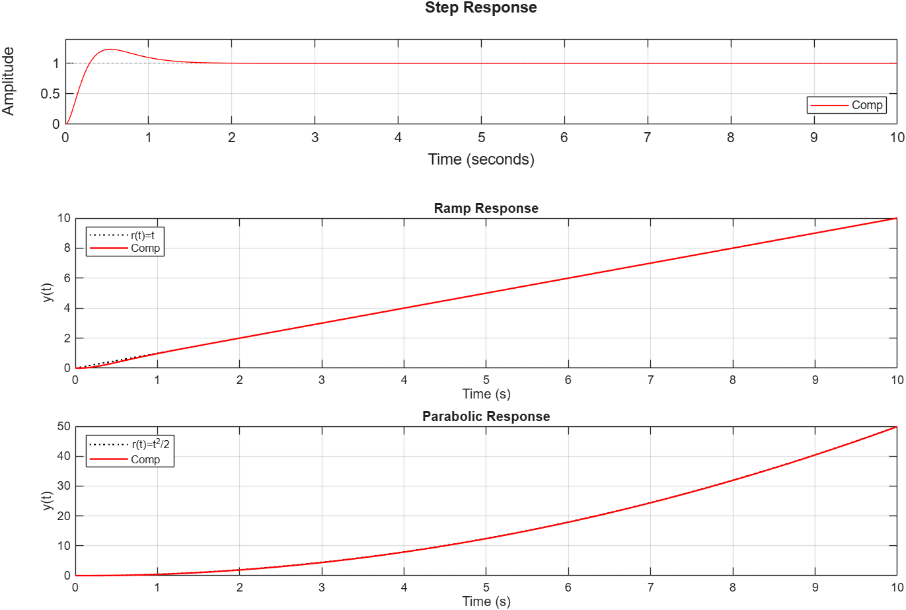
01068007 Control Systems · Chapter 11 · L11_Ex2_Lead_Type2.m
6
LAG COMPENSATOR
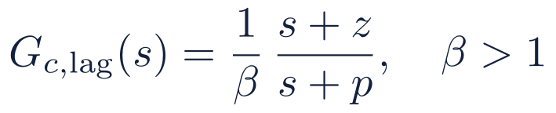
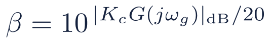
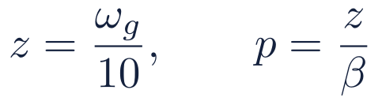
เกนที่ ω → 0 ไม่เปลี่ยน Kv จึงคงเดิม แลกกับ bandwidth ที่แคบลง
pole ของ Lag อยู่ใกล้ 0 มาก (เช่น 0.0056) step response จึงมี slow tail
01068007 Control Systems · Chapter 11
7
ตัวอย่างที่ 3 · LAG
G(s) = 20/(s(s+2)) , Kv = 20 s⁻¹ , PM ≥ 50° , GM ≥ 10 dB
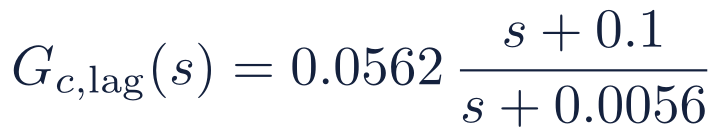
| Ex1 Lead | Ex3 Lag | |
|---|---|---|
| ωgc (rad/s) | 8.87 | 1.01 |
| PM | 50.7° | 57.9° |
| Rise time | ≈ 0.13 s (เร็ว) | ≈ 1.2 s (ช้า) |
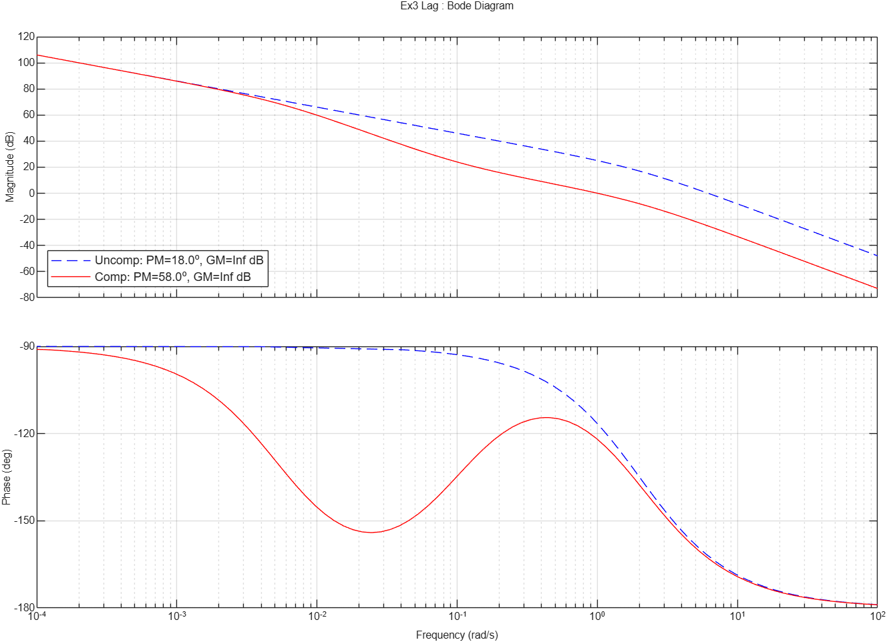
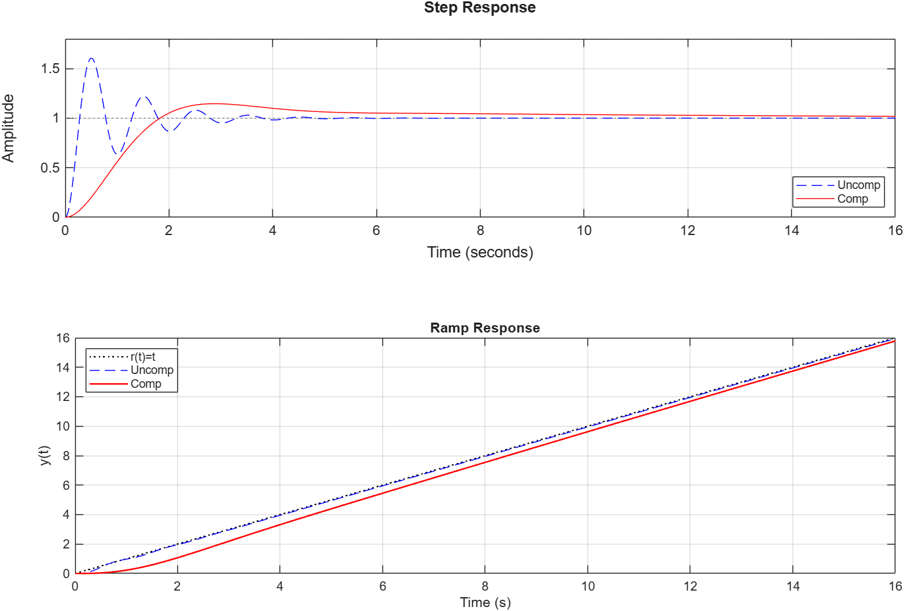
01068007 Control Systems · Chapter 11 · L11_Ex3_Lag.m
8
ตัวอย่างที่ 4 · LAG กับ PLANT อันดับ 3
สเปก: Kv = 10 s⁻¹ , PM ≥ 50° , GM ≥ 10 dB
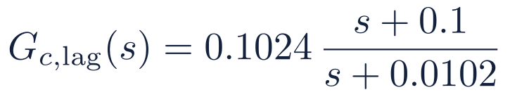
ผล: PM = 67.8° @ 1 rad/s , GM = 23.1 dB @ 6.98 rad/s ผ่านทั้งสองสเปก
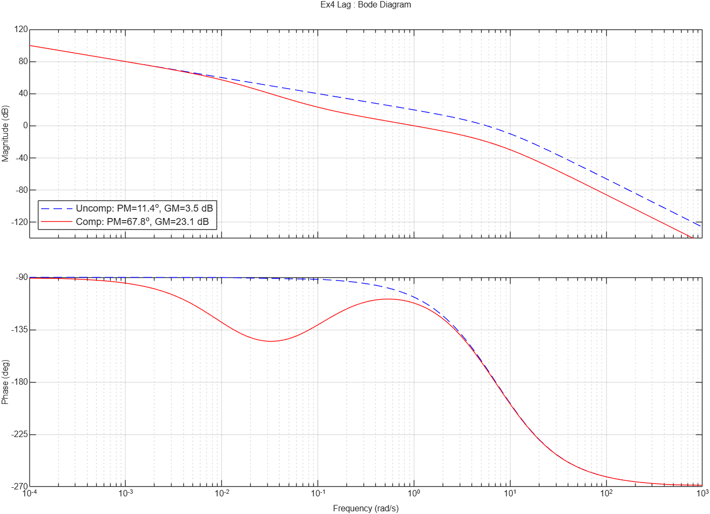
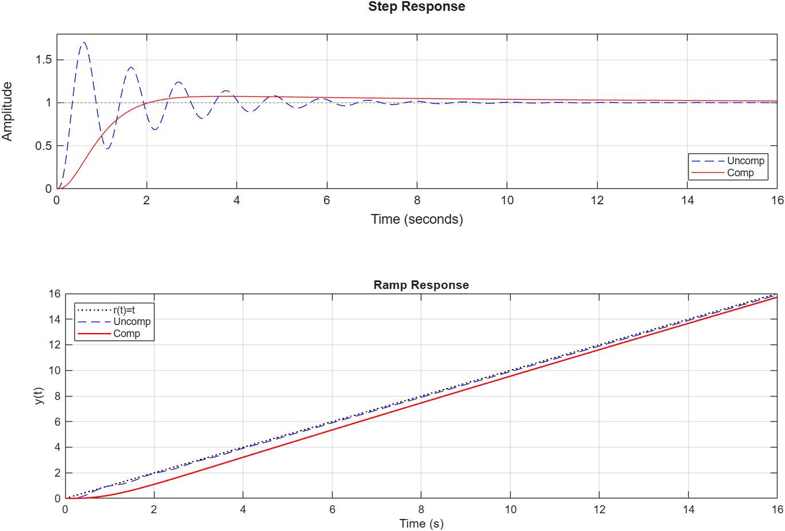
01068007 Control Systems · Chapter 11 · L11_Ex4_Lag.m
9
LEAD-LAG COMPENSATOR
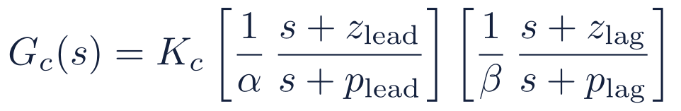
ใช้เมื่อ Lead ตัวเดียวเติมเฟสไม่พอ และ Lag ตัวเดียวทำให้ระบบช้าเกินไป
1. Kc จาก Kv
2. ออกแบบ Lead
3. อ่าน PM ที่ขาด
4. Lag ที่ ωg = 1
5. ตรวจ PM, GM
01068007 Control Systems · Chapter 11
10
ตัวอย่างที่ 5–6 · LEAD-LAG
| ขั้น | ตัวอย่างที่ 5 : 10/(s(s+1)(s+5)) | ตัวอย่างที่ 6 : 25/(s(s+1)(s+10)) |
|---|---|---|
| สเปก, Kc | Kv = 5, GM ≥ 10 dB → Kc = 2.5 | Kv = 5, GM ≥ 20 dB → Kc = 2 |
| ก่อนชดเชย | PM 3.94° @ 2.04, GM 1.58 dB | PM 27° @ 1.42 (ตามสไลด์เดิม) |
| φmax, α | 51°, α = 0.125 | 28°, α = 0.361 |
| Lead | 8(s+1.19)/(s+9.46) @ ωg 3.35 | 2.77(s+1.14)/(s+3.16) @ ωg 1.9 |
| หลัง Lead | PM 33.7°, GM 10.1 dB | PM 44.9°, GM 15 dB |
| Lag @ ωg 1 | 13 dB, β 4.47: 0.2239(s+0.1)/(s+0.0224) | 6.9 dB, β 2.21: 0.4525(s+0.1)/(s+0.0452) |
| ผลสุดท้าย | PM 63.2° @ 1.02, GM 22.9 dB | PM 59.6° @ 1.03, GM 21.7 dB |
01068007 Control Systems · Chapter 11 · L11_Ex5_LeadLag.m, L11_Ex6_LeadLag.m
11
ตัวอย่างที่ 5–6 · ผลจาก MATLAB
ตัวอย่างที่ 5 : PM 63.3° , GM 23.0 dB , Mp 9.5%
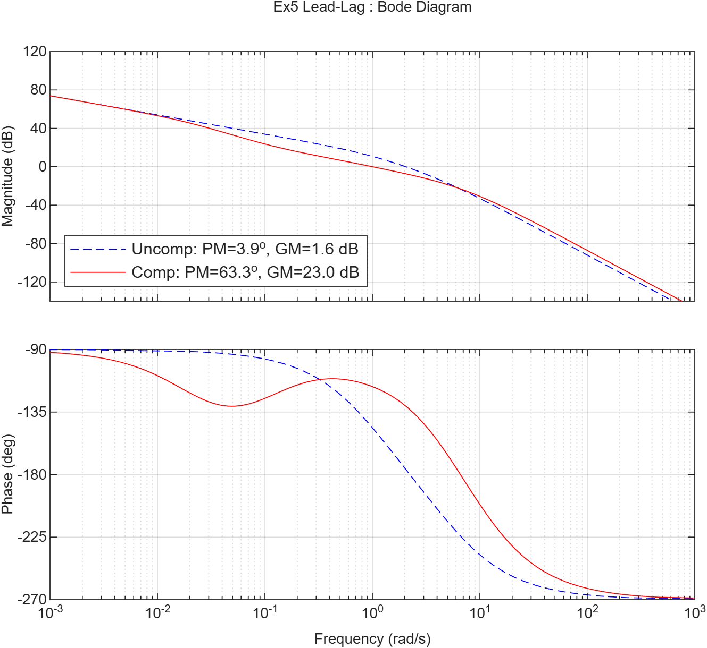
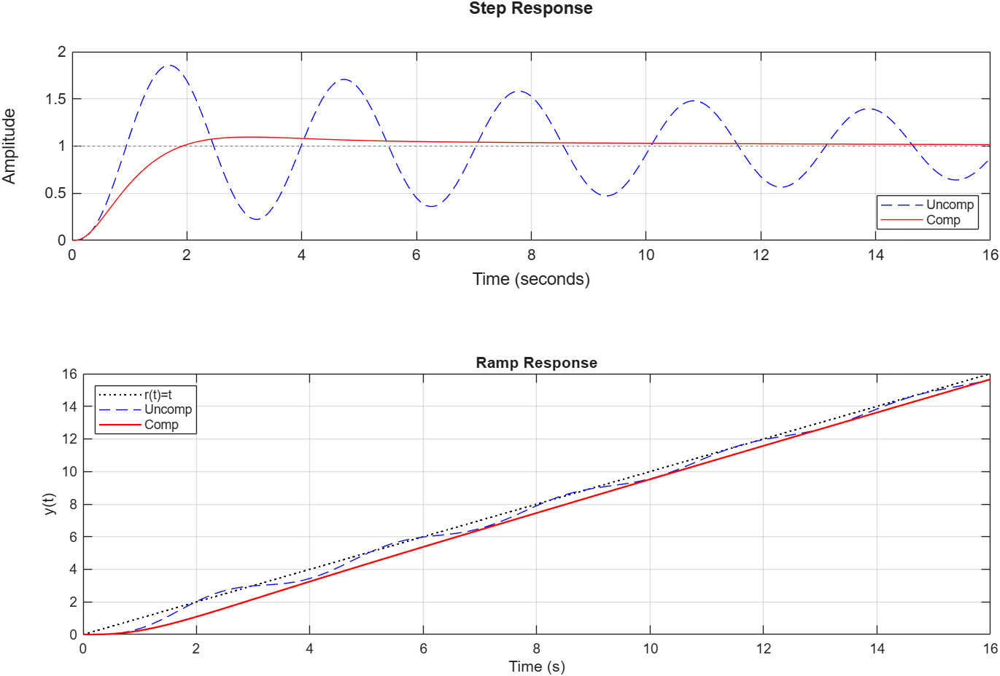
ตัวอย่างที่ 6 : PM 61.5° , GM 25.1 dB , Mp 11.5%
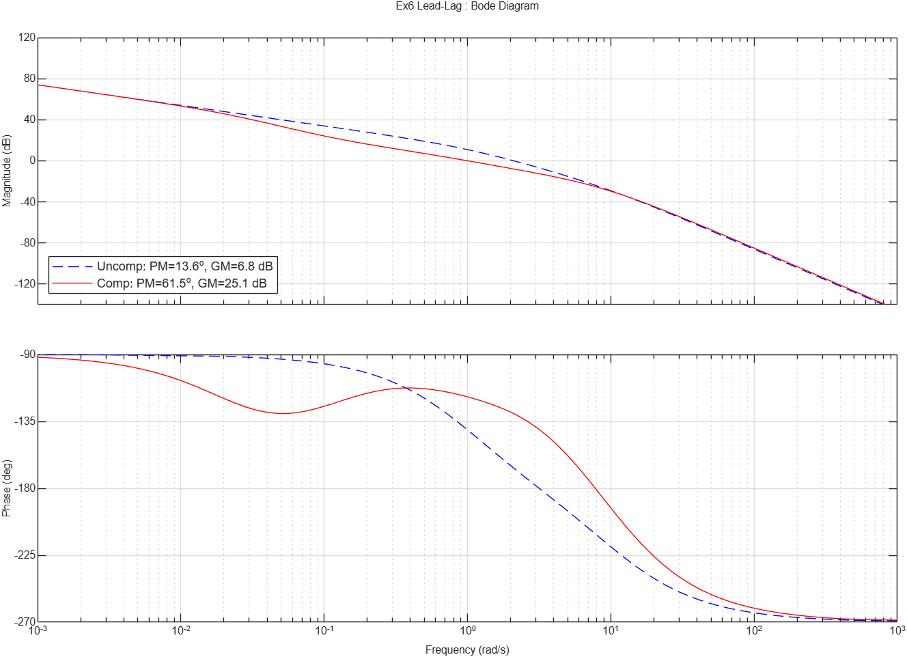
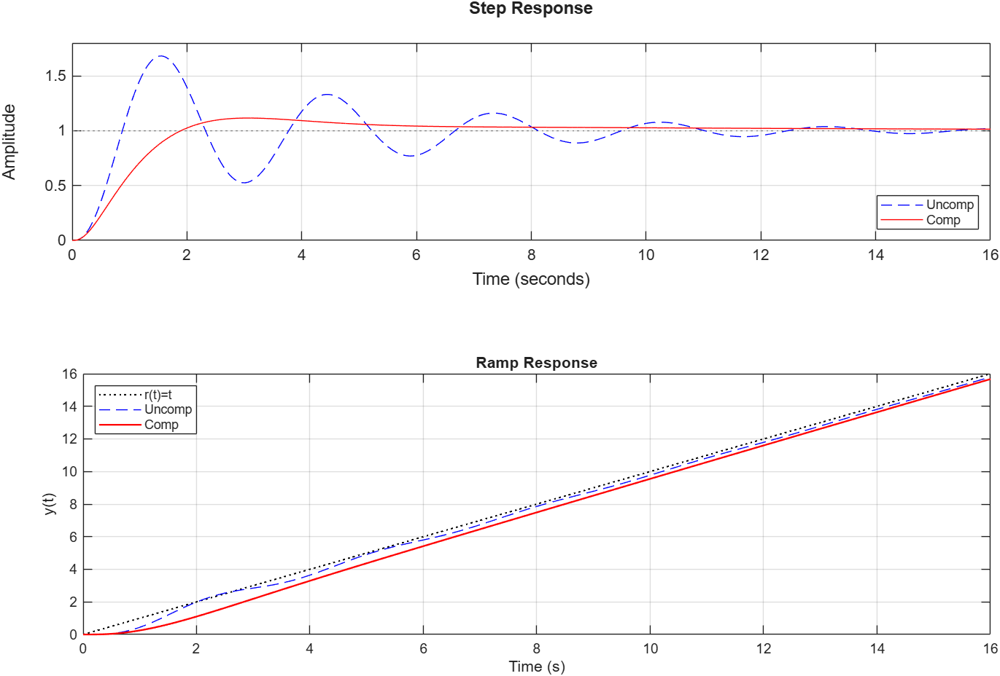
ค่าจาก m-file ที่ใส่ Kc ครบทุกขั้น ตัวอย่างที่ 6 จึงใช้ φmax = 41° แทน 28° ในสไลด์เดิม
01068007 Control Systems · Chapter 11
12
PID ในโดเมนความถี่
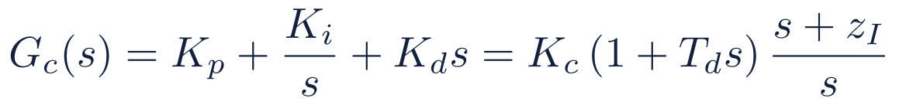
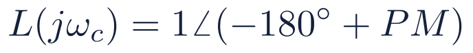
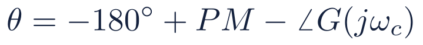
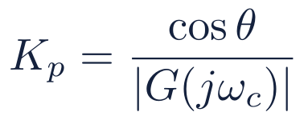
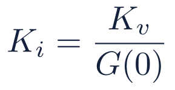
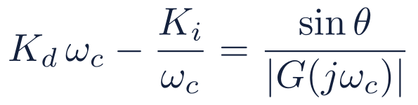
PI วาง zero ต่ำกว่า ωc หนึ่ง decade
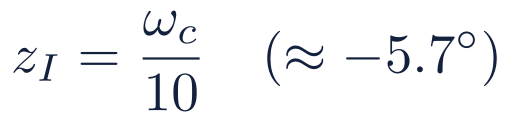
PD เติมเฟสที่เหลือ แล้วปรับ Kc ให้ 0 dB ที่ ωc
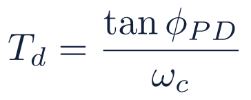
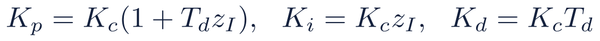
01068007 Control Systems · Chapter 11
13
PID ในโดเมนความถี่
เทียบได้กับ เกน Kc
ยกกราฟขนาดทั้งเส้น เฟสไม่เปลี่ยน
ใช้ตั้ง Kv แต่ PM ลดเมื่อ Kp สูง
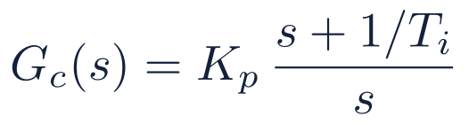
เทียบได้กับ Lag ที่ p → 0
pole ที่ s = 0 เพิ่ม system type เฟส −90° → 0°
วาง zero 1/Ti ต่ำกว่า ωc
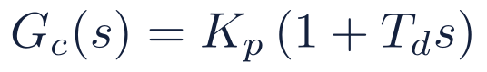
เทียบได้กับ Lead ที่ p → ∞
เฟส 0° → +90° ขนาด +20 dB/dec
ไวต่อ noise ต้องมี filter
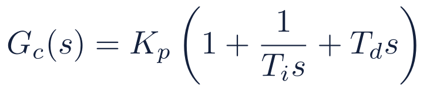
เทียบได้กับ Lead-Lag
zero 2 ตัว + pole ที่ 0
PI คุมความถี่ต่ำ PD เติมเฟสที่ ωc
ดังนั้นขั้นตอนออกแบบ PID ใช้แนวคิดเดียวกับ Lead-Lag: ล็อกความถี่ต่ำด้วย Ki แล้วเติมเฟสที่ ωc ด้วยเทอม D
01068007 Control Systems · Chapter 11
14
ตัวอย่างที่ 7 · G(s) = 10/((s+1)(s+2)(s+5)) , PM = 50° @ ωc = 3 rad/s , Kv = 4
1. อ่านขนาดและเฟสของ plant ที่ ωc
2. มุมที่ PID ต้องให้
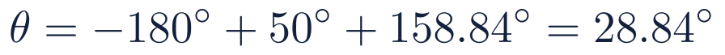
3. Kp จากส่วนจริง และ Ki จาก Kv
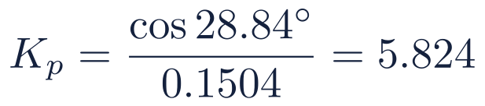
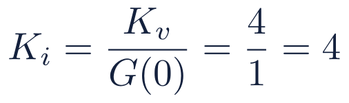
4. Kd จากส่วนจินตภาพ
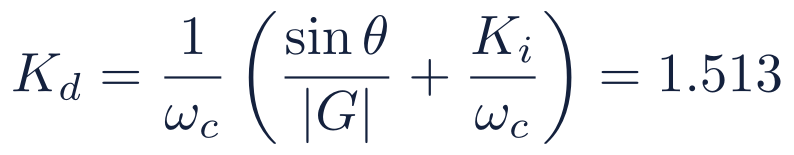
1. วาง zero ของ PI ที่ ωc/10
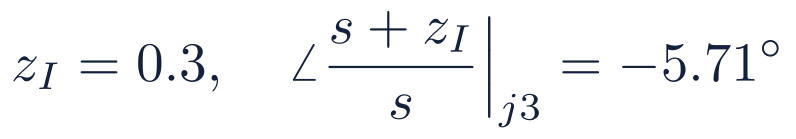
2. เฟสที่ PD ต้องเติม
3. Td และ Kc ให้ |L(jωc)| = 0 dB
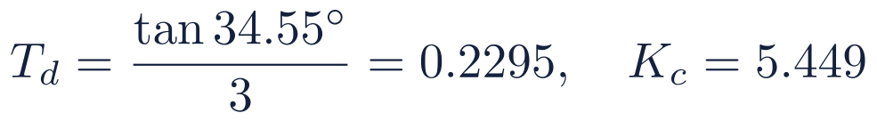
4. แปลงเป็นรูปขนาน
01068007 Control Systems · Chapter 11 · L11_Ex7_PID_FreqDomain.m
15
ตัวอย่างที่ 7 · PID
G(s) = 10/((s+1)(s+2)(s+5)) , PM = 50° @ ωc = 3 rad/s , Kv = 4
ที่ ωc = 3 : |G| = 0.150 , ∠G = −158.8° → θ = 28.8°
| วิธี | Kp | Ki | Kd | PM | Mp | Kv |
|---|---|---|---|---|---|---|
| A คำนวณตรง | 5.82 | 4.00 | 1.51 | 50.0° | 18.2% | 4.0 |
| B PD × PI | 5.82 | 1.63 | 1.25 | 50.0° | 12.6% | 1.6 |
| pidtune | 5.19 | 3.74 | 1.80 | 59.9° | 9.5% | 3.7 |
| A + filter N=10 | 5.82 | 4.00 | 1.51 | 47.5° | 20.5% | 4.0 |
filter Kd·s/(Tf·s + 1) ลด PM ราว 2.5° จึงควรเผื่อ PM ไว้ 3–5°
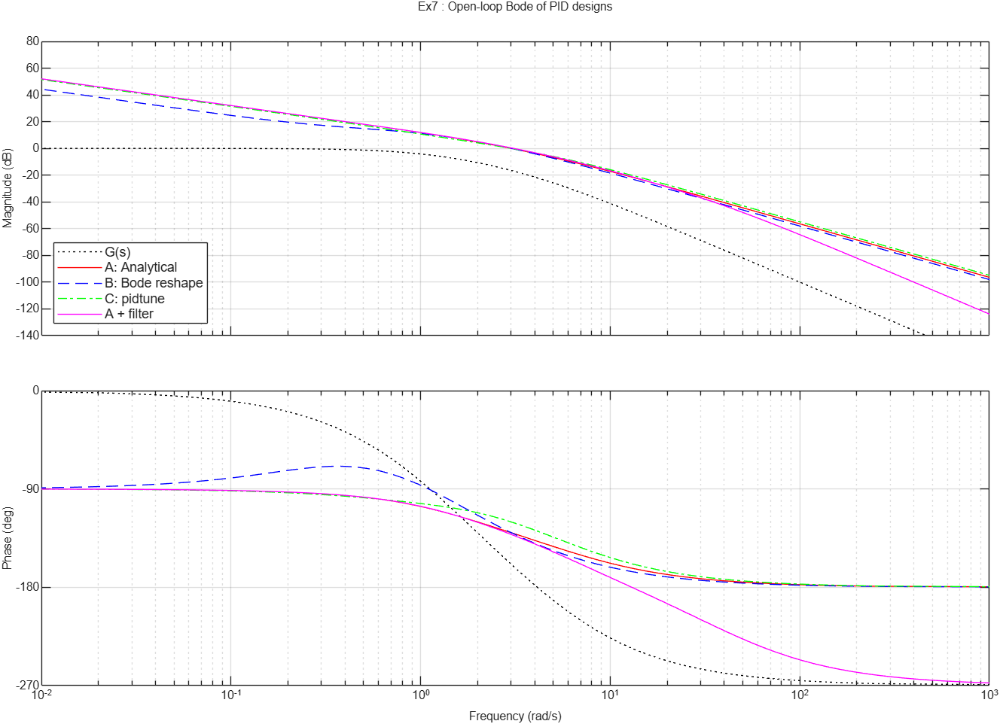
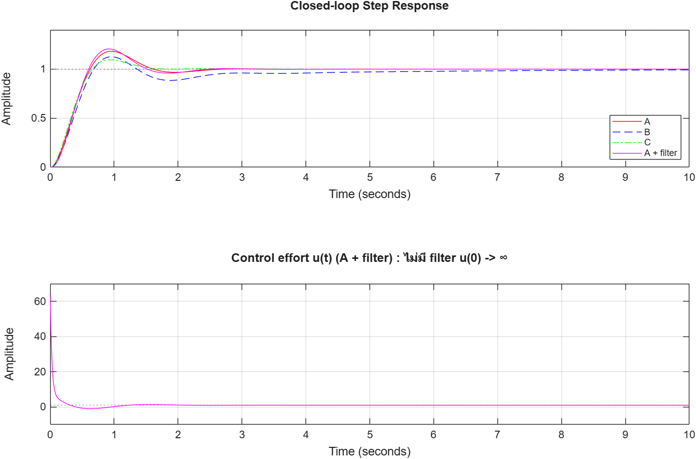
01068007 Control Systems · Chapter 11 · L11_Ex7_PID_FreqDomain.m
16
แบบฝึกหัดข้อ 1 · เฉลย LAG-LEAD
G(s) = 10/(s(s+1)(s+5)) , Kv = 20 , PM > 50° , GM > 10 dB
ผลตามเฉลย PM 55.6° , GM 19.8 dB · m-file (ωg คำนวณ = 6.25) ได้ PM 52.3° , GM 28.9 dB
ที่ Kc = 10 จุด −10 dB อยู่ที่ 6.25 rad/s ไม่ใช่ 2.9 ตั้ง useSlide = true ใน m-file เพื่อใช้ค่าตามเฉลย
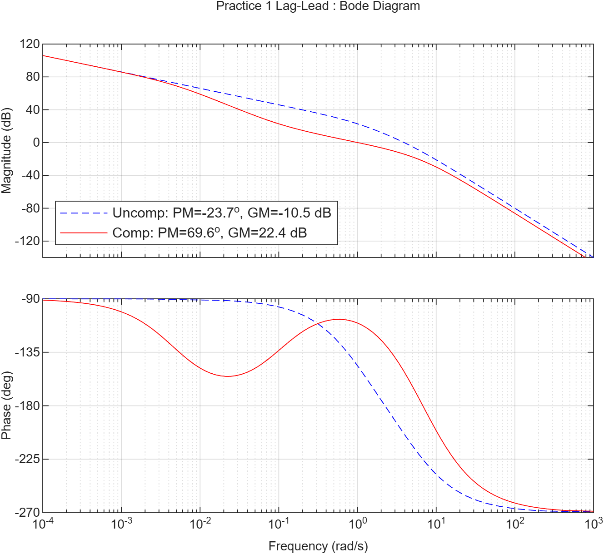
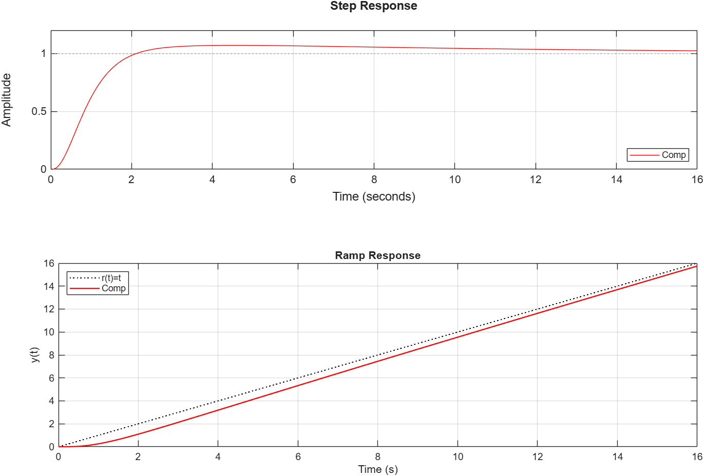
01068007 Control Systems · Chapter 11 · L11_Practice1_LagLead.m
17
สรุป
| ตัวอย่าง | ชนิด | PM สไลด์เดิม | PM MATLAB | GM MATLAB |
|---|---|---|---|---|
| 1 | Lead | 50.7° | 50.6° | ∞ |
| 2 | Lead (Type-2) | 55° | 55.0° | ∞ |
| 3 | Lag | 57.9° | 58.0° | ∞ |
| 4 | Lag | 67.8° | 67.8° | 23.1 dB |
| 5 | Lead-Lag | 63.2° | 63.3° | 23.0 dB |
| 6 | Lead-Lag | 59.6° | 61.5° (Kc ครบ) | 25.1 dB |
| 7 (วิธี A) | PID | ตัวอย่างใหม่ | 50.0° @ 3 rad/s | ∞ |
| 7 + filter | PID (N = 10) | ตัวอย่างใหม่ | 47.5° @ 3.1 rad/s | 21.1 dB |
| แบบฝึกหัด 1 | Lag-Lead | 55.6° | 52.3° (ωg 6.25) | 28.9 dB |
Lead เร็วแต่เติมเฟสได้จำกัด · Lag ช้าแต่ไม่แตะ Kv · Lead-Lag และ PID รวมข้อดีทั้งสอง (PI ≈ Lag, PD ≈ Lead)
01068007 Control Systems · Chapter 11
18
m-file ประกอบ · Q & A
| ไฟล์ | เนื้อหา |
|---|---|
| L11_lead_design.m , L11_lag_design.m | ฟังก์ชันออกแบบ Lead และ Lag |
| L11_compare.m | PM/GM/Kv และพล็อต Bode, step, ramp |
| L11_Ex1 … L11_Ex6 | ตัวอย่างที่ 1–6 |
| L11_Ex7_PID_FreqDomain.m | PID วิธี A, B, pidtune และ filter |
| L11_Practice1_LagLead.m | เฉลยแบบฝึกหัดข้อ 1 |
| L11_make_figures.m | สร้างรูป PNG ที่ใช้ในสไลด์นี้ |
ต้องใช้ Control System Toolbox · ทดสอบบน MATLAB R2026a
01068007 Control Systems · Chapter 11
19